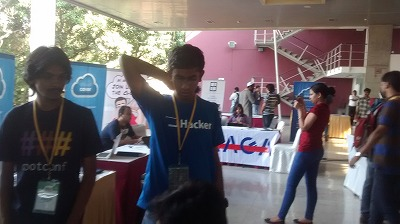

「インドのシリコンバレー」バンガロールの IT コミュニティ事情
書いた人 : 所 (ctokoro)
はじめに
はじめまして。フリーランスで主に Ruby のコードを書いている 所 と申します。
今年 2014 年の 4 月から 9 月の間、バックパッカーとしてインドを中心に旅をしてきました。その道中、5 月には「インドのシリコンバレー」と呼ばれる場所であるバンガロールに滞在し、Rubyist を中心とした現地のエンジニアと交流してきました。今回の記事では、そのバンガロール滞在時の話を書きたいと思います。
実はその時のことをすでにハフィントン・ポストでも連載していた1のですが、そこでは触れていない meetup やカンファレンスに参加した内容を中心に記事を書きたいと思います。
参加したイベント
1. Emacs 勉強会
まずは、日曜日に行われた Emacs 勉強会に参加！ 僕は Emacs 使いではないのですが、滞在期間中に行けそうなやつを選んだらあまりなかったのです……＞＜

会場までの道に迷いまくって最後の方しか参加できなかったのですが、着いた時には LISP の話をたくさんしていました。

この手前の青いポロシャツ (Microsoft のロゴ付き) の人が年配の方でしたが、どうやら有名なエンジニアらしく他のエンジニアの相談を受けて、 「たしかにその方法は解決策に見えるのだが、実はこういった状況の時に解決できていないことがわかるのだ」と諭していたりしました。
若い世代で盛り上がっているというだけでなく、かなり前からプログラマーが活躍しており、インドのエンジニアの世代的な層の厚さを感じました。

お酒も混じった歓談も終わりの頃、皆がモクモクと何かをやり始めました。 聞いてみると、「スクラッチで書いた Web サーバーで誰のサーバーが一番コネクションを張れるか競争！」というハッカソンが始まったようです。
しかも、ただのスクラッチではなく、実装言語を変えて！ 一人は Node.js、 ひとりは Erlang、 もう一人は C、 最後の一人は Haskell。
Node.js ギーク 「くそ！ うまく制御できない！！」
青いポロシャツのグル 「そう、Node.js だとその課題にぶつかりやすいのだよ」
……僕には手が届かない、高みの世界でした……。orz
2. Extreme Tuesday Club
次は、もっとカジュアルに行われている毎週火曜夜に Bar でプログラマが集まる会に参加しました。

特にこれといったテーマはなく、気軽に集まってお酒を飲みながら情報交換・交流をする感じでした。
ただ、Mac を取り出してきて、「Clojure の Cool なライブラリ作ってみたんだよ見てくれ！！」みたいに話が始まるなど、集まっている人は極めて Geek な感じでした。

もくもく会というわけでもないですし、日本で Bar でエンジニアのイベントが行われているのも聞いたことがないので、同じエンジニアでもライフスタイルというか嗜好がちょっと違うのかもしれません。(！)
そういえば、あちらではエンジニアは基本モテるようです。なぜかというと、、、給料がいいからです！ (爆) イケてる職業、な雰囲気を感じました。
また、話を聞いていると Clojure, Node.js, Haskell, Ruby, Scala あたりの言語名をよく耳にしました。特に Clojure。関数型言語の波を感じます！
どうやら話を聞いていると Java は基本的に皆できるもので、その影響もあり Clojure, Scala が人気、という構図のようです。
エンタープライズはやはり Java が中心で、動的言語のエンジニアはあまり多くはないそうです。
さて、お次はいよいよ バンガロールの Ruby コミュニティの meetup ！！
バンガロールの Ruby コミュニティはかなりアクティブらしいと聞いていましたし、月例で 20 ～ 40 人は集まるらしいので、楽しみです！！
……と思ったら、まさかのキャンセル！！！ どうやら、大きなカンファレンスの日付と被ってしまったかららしい。それが、Rootconf！
3. Rootconf
Rootconf 2014 はワークショップ 2 日間・カンファレンス 2 日間の計 4 日間のイベントらしく、現地のエンジニアからはとても評判がよいイベントでした。
運営は HasGeek という会社で、他にも JavaScript の JSFoo 2014 や、Android の Droidcon India など多数のイベントを開催しているようです。
ならば！！！ ということでチケットを買って、僕も参加してきました！

ここが会場です。大きな看板もあり、スポンサーを見ているとなかなかビッグな企業名も！
入り口で受付を行い、参加証をゲット！

中には企業ブースも出ていて、盛り上がっていそうです。


Rootconf は “DevOps とクラウド環境でのインフラ” (Conference & Workshops on DevOps and Cloud Infrastructure) がテーマのイベントでした。(Rootconf の root って UNIX 系 OS の管理者ユーザー “root” のことですよねきっと！ ロゴがそうだし！)
僕は後半 2 日間のカンファレンスしか行けなかったのですが、Docker や Chef などまさに DevOps の話や、インフラ構成、DDoS 対策、PostgreSQL を NoSQL として扱ってみる話や、Flash Talk では Go 言語やファイルシステムの話題も飛び交うなど、幅広い話題を扱うカンファレンスでした2。


夜になると、スポンサー提供のディナーも振る舞われていました。


インド料理 (チャパティやカレーなど) を中心に目の前でシェフが料理を作ってくれるスタイルで、味もばっちりでした！ (僕はインド料理好きです)
そしてカンファレンス 2 日目では、Flash Talk にて参加者から発表者を募っていたので、僕も急遽応募して、採用されたので発表することができました！


内容は RubyKaigi 2013 の LT で採択された内容3の焼きまわしでしたが (すいません＞＜)、そこそこ受けたようなのでよかったです！
最後に、スタッフの Sreekandh さんと写真を一緒にパチリ！

このイベントで更に多くのエンジニアと交流でき、初の海外カンファレンスに参加・発表も出来たので、とても大満足でした！
まとめ
今回は 2 週間弱という短期滞在だったのでこのくらいしか交流できませんでしたが、現地のエンジニアの雰囲気を感じることができ実りある滞在だったと思います。
また、RubyKaigi を通じて海外エンジニアと交流しながら感じていた「エンジニアのマインドはどこでも似てる」という感覚も確信に変わりました。考えてみれば同じ言語・ツールを使って同じ問題を解決しようとしているのだから、マインドが似ているのは当然ですね！
このバンガロールについて色々聞いた話の中で僕が最も衝撃を受けたのが、どうやらプログラマの母数が全然違いそうなことです！ バンガロールは約 1,000 万人ほどの都市なのですが4、バンガロールで適当に 10 人を集めたら 1 ～ 2 人はプログラマだと多くの人が言っていました。
それが正しいとして単純に計算するのならば、バンガロールだけで 100 ～ 200 万人 のプログラマがいることになります！！ しかも更に驚くべきは、インドにはバンガロールのような IT の街が、他にもいくつかあるということです！
もちろん全員が優秀ということはないと思いますが、ハイレベルなエンジニアも相当数いそうです。母数が違いますからね！
バンガロールには日本人エンジニアが全くいなかったおかげで、日本人というだけで興味を持ってくれて、簡単にアポが取れたのは本当にラッキーでした。また、我らが Ruby の Matz の名声は当然轟いていたので、その点でも日本に興味を持ってくれていました。ちなみにあとから得た情報によると、実は日本人もいるにはいるのですが現地のコミュニティと全く絡んでいない、という状況のようです。だから、みんな日本人と会ったことないって言ってたのね！
ぜひいつかインドで仕事をしたいな！ と個人的には思っています。これだけエンジニアが多いとか、楽園じゃないですか！
みなさんも、機会があればぜひバンガロールを訪れてみてください！